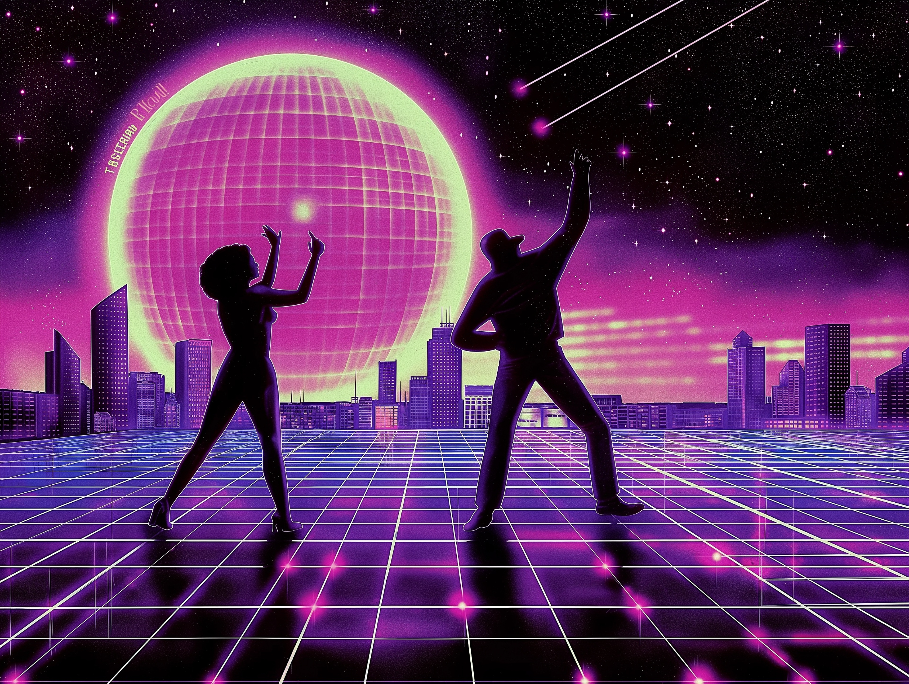
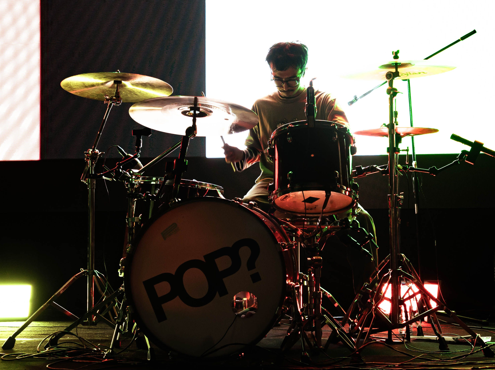
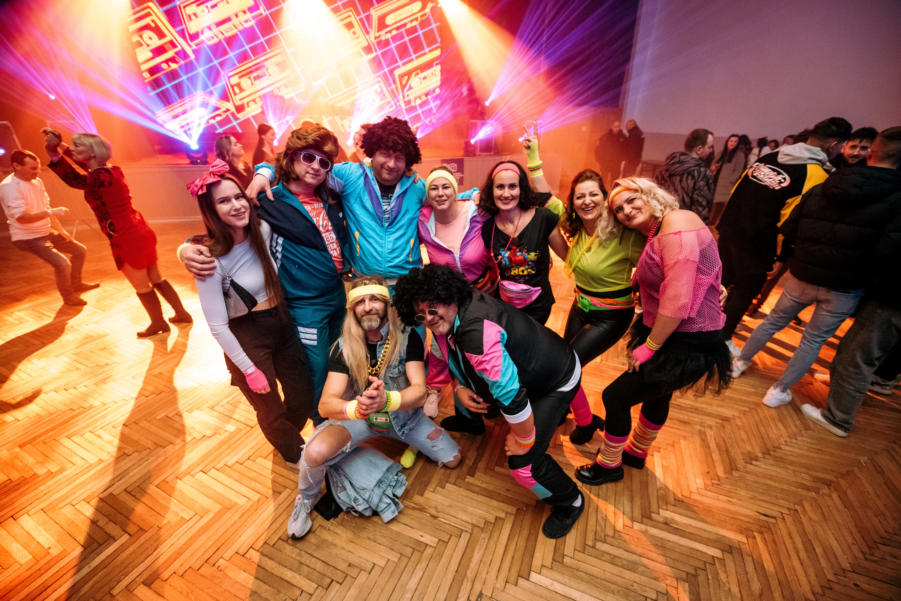
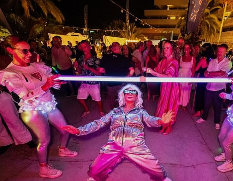
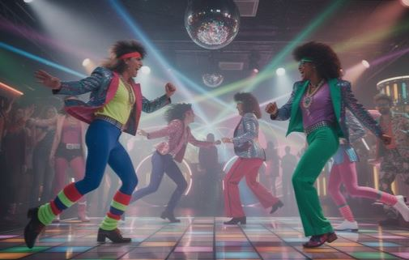
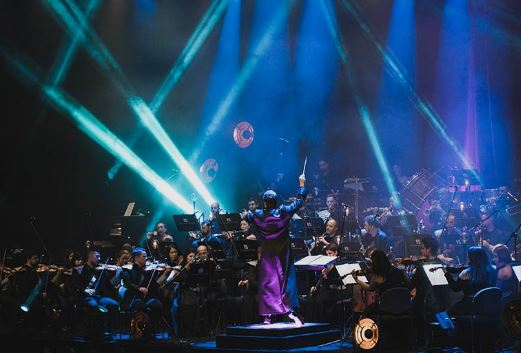

Noche Electro 80s
Noche electro 80s con los mejores DJ en vivo y ambiente neón.
Asociación cultural dedicada a los mejores festivales,
conciertos y noches temáticas synthwave & pop-rock.

Noche electro 80s con los mejores DJ en vivo y ambiente neón.

Concierto en vivo repasando los grandes himnos del rock y pop-rock.

Disfruta de la proyección de videoclips y participa en concursos.

Una noche para bailar y cantar los grandes éxitos del pop internacional de los años 80.

Un festival de música electrónica inspirado en la estética y los sonidos ochenteros.

Revive las películas más míticas de los años 80 y sus bandas sonoras inolvidables.
El 80s Retro Beat es una asociación cultural sin ánimo de lucro dedicada a la promoción de los eventos y la música de la década de 1980.